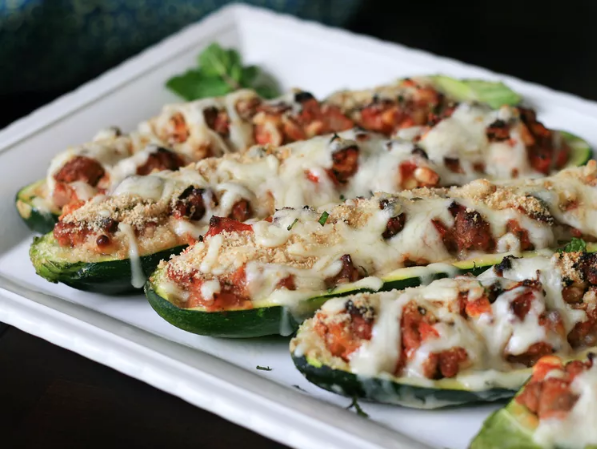

Back to list of recipes
Mediterranean Stuffed Zucchini

Mediterranean Stuffed Zucchini
Here's a delicious way to solve the problem of those too-big zucchini ballooning in your garden at the end of the summer: zucchini boats baked and stuffed with lamb, feta, pine nuts, tomatoes, and other Mediterranean flavors!
Ingredients
- 1 extra large zucchini, halved lengthwise
- 1 tbsp olive oil
- 1 sweet onion
- etc.
Cooking Directions
- Preheat oven to 450 degrees F
- Remove seeds from zucchini
- Heat olive oil in pan...
- Stir in tomato sauce
- Bake in oven for 30 mins etc.